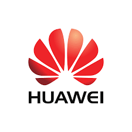
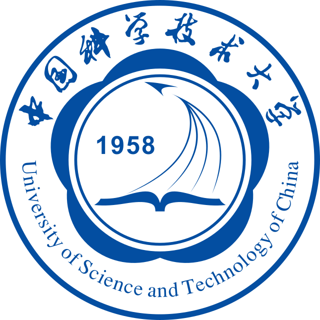
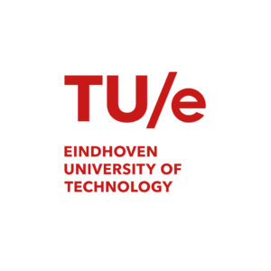
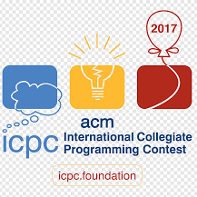
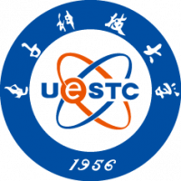

Experience
My personal journey (sorted by reputation)-

Huawei's "Brave Star" Internship Program
July - Sept. 2021I have worked on Huawei's Brave Star Internship program as an AI Research and Development Intern. From this internship program, I have experienced different machine learning algorithms for clustering, classification, forecasting or prediction and anomaly/outlier detection problems on time series data.
-
Machine Learning Engineer and Full Stack Development
October 2022 - March 2024I have been working on Upwork as a Top Rated Freelancer, where I have consistently delivered high-quality solutions across a wide range of projects. Throughout my time on Upwork, I have successfully completed more than 10 jobs, all with 5-star ratings from my clients.
-
IEDE 2022, Tsinghua University Certificate Program
March - April, 2022I have participated and certified in Tsinghua University Certificate Program on “Innovation & Entrepreneurship” Innovating Education & Building New Skills for Digital Economy (IEDE 2022)
-

USTC 2022 Future Scientist Exchange Program (FuSEP)
July 3 - July 8, 2022I have participated and certified in USTC FuSEP 2022 Future Scientist Global Online Summer Camp program which initiated by USTC with the aim to bring excellent young scientists all over the world together to exchange ideas for solutions to present world challenges through science and technology.
-

EngD ST 2024, Technology University of Eindhoven
Oct - Dec, 2024I joined EngD ST 2024 program at TU/e and experienced several personal development and technical workshops like Software Architecture, Configuration Management, Design Patterns, Object-Oriented Analysis and Design, Software Quality, System Modeling, Version Control, Continuous Integration, and Agile Development.
-

AI Research and Development, SUSTech
Sep. 2023 - Oct. 2024I have worked on multiple surgical workflow analysis projects post-MSc, focusing on instrument, phase, and triplet recognition in surgical video data. During this period, I also received the 2024 Guandong Government Outstanding International Scholarship Award.
-

ACM-ICPC Programming Contest
June – Aug. 2017I participated in and completed the ACM-ICPC Programming training, taught by KAIST-World Friends ICT Volunteers and supported by the National Information Society Agency, Korea Advanced Institute of Science and Technology (KAIST), and Adama Science and Technology University (ASTU).
-

Counselor Assistant in SCSE, UESTC
Jan. 2018 - Jan. 2023I have worked as a counselor assistant for 5 years in the school of Computer Science and Engineering on behalf of all international students (both undergraduate and postgraduate students). And also worked as a class representative for all computer science undergraduate students of the 2017 batch/2021 graduates.
-

Android Application Development Workshop
Sept. 2020 – Oct. 2020I led this workshop that was hosted by the School of Computer Science and Engineering at UESTC and served as a lecturer on behalf of the 62 participant students. My work in this workshop was highly praised and I was awarded a certificate of appreciation by our school.
-

UESTC International Undergraduate Student Innovation Skill Contest
March – May 2018I participated and was certified as a competent on-call for the first UESTC International Undergraduate Student Innovation Skill Contest 2018 under Team 1011.
-

Judge on USAD Speech and Interview Program
Jan. 2023I was invited by USAD China Organizing Committee to work as a judge in the 2023 USAD Speech and Interview Program. The participants were Chinese high school students and I'm so delighted to see that our next generations could come up with so many thoughtful ideas! It was a wonderful chance for them to speak out their dreams and future plan!
-
Be part
of my
story!